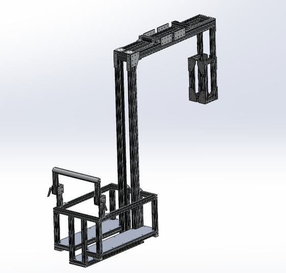
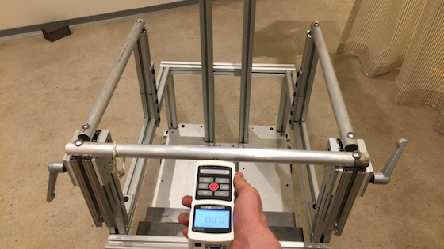
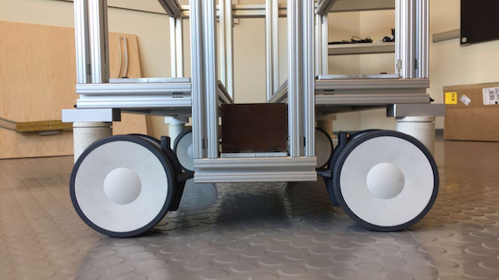
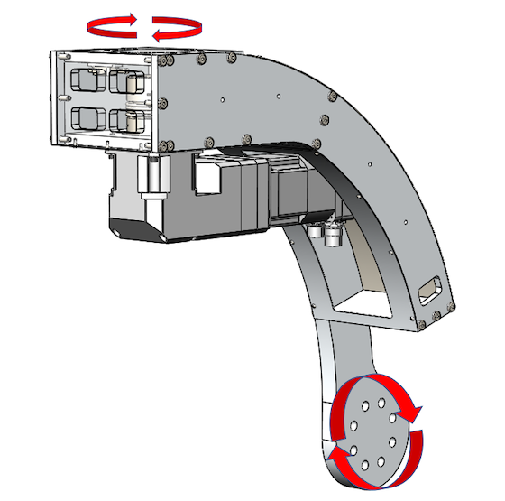
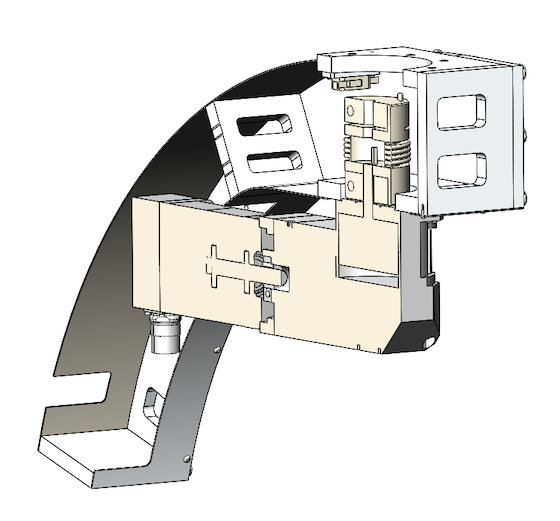
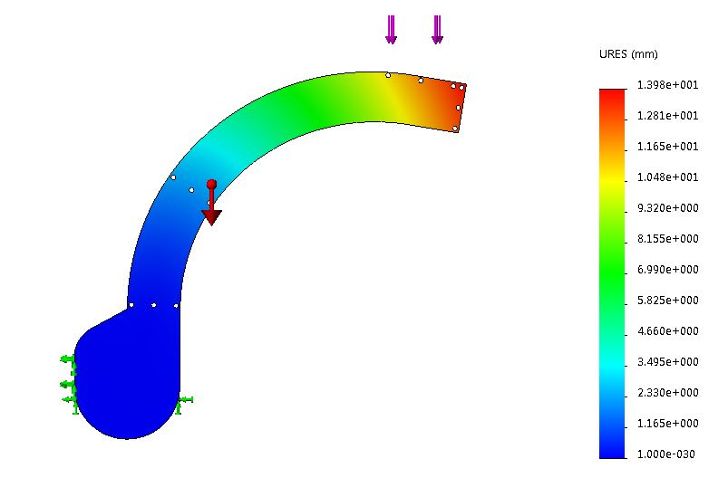
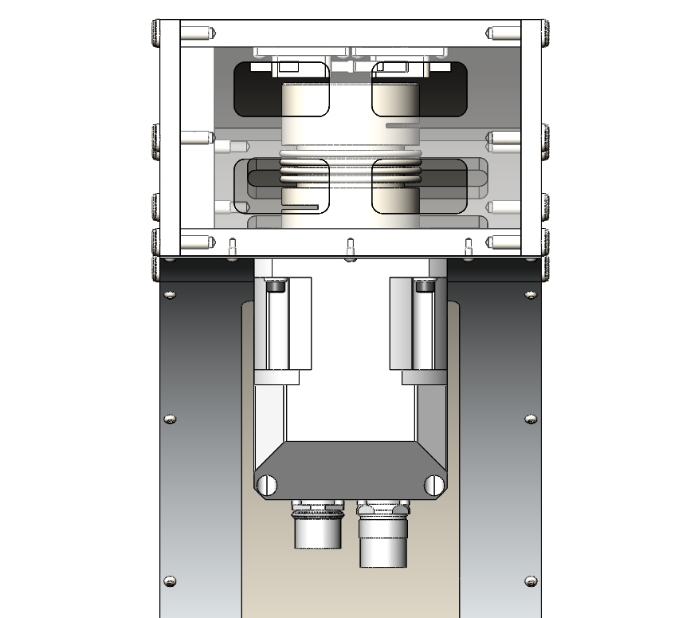
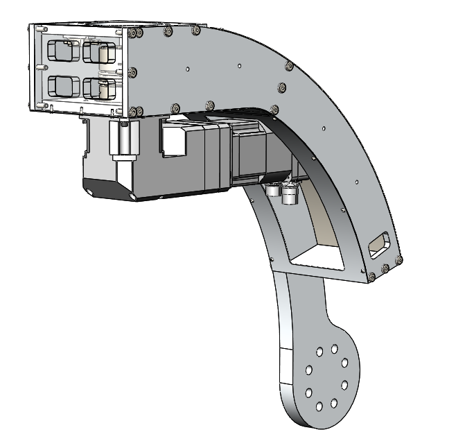

Cart Usability Study
- I was tasked to address one of the first risks in this project’s scope: with the addition of motors and an increased footprint required to make the device automated, could the gross movement and fine positioning of the entire system remain a manual process?
- To do this, I developed a low-fidelity prototype that reflected the estimated weight of the completed device (including the weight of the surgical technology), and conducted a usability study.
- The cart prototype was made out of 80/20 and loaded with steel to simulate the estimated weight of the complete system.
- Quantitative analysis was performed to understand the maximum push and pull forces required to move the cart depending on caster size and starting position (for example, worst case caster position shown in the photo to the left). These values were compared to ergonomic standards for acceptable push and pull forces in industrial applications.


- Additional qualitative analysis was performed through a user study that I designed to simulate the experience of using the device in a hospital setting. Participants were put through a series of tasks including positioning the prototype over the operating table (gross movement), shifting three inches right (finite positioning), moving down the hallway over cords and into the elevator (rough terrain), and a full 360-degree turn (rotation).
- I made sure to recruit a diverse sample size, testing with both males and females ranging from 5 feet tall to 6 feet 6 inches. We wanted to make sure that the cart’s weight would work for all users. The analysis shown in the pictures below highlight the positive results of this work. Our results (both quantitatively through push/pull force analysis and qualitatively through the user study) yielded unanimous approval of the cart’s weight, allowing the team to proceed in the automated design with confidence.

Mechanical Design
- The second part of this project was to design and build a works-like model of the automated cart, including the connection to the end-effector. To achieve 5-degrees-of-freedom while maintaining a minimal footprint, the industrial design team at Continuum developed a novel solution consisting of three main linkages and a base that would provide the necessary motion over the operating table.
- I was responsible for the mechanical design one of these linkages. While the complete assembly can not be shown for confidential reasons, the linkage I designed can be seen above.
- The circular bolt pattern on the bottom of the linkage connected to a slew-drive allowing for rotational motion over the operating table. The motor (shown right) coupled the linkage to one sitting directly above it, which could swivel, moving the end-effector left and right along the operating table.
- Motor selection analysis was conducted, with torque and speed requirements prioritized over form factor as this was a works-like model and only needed to loosely resemble the industrial design. Finally, a coupler was selected to join this linkage and the one above it.


- I performed a Finite Element Analysis (FEA) on the individual parts of the linkage to ensure they would not yield on deflect in both static and dynamic environments. Additional analysis was conducted to understand the counterweight requirements on the base of the device such that the cart would pass IEC 60601 standards.
- This part of the project resulted in a full scale works-like model of the automated device. It was delivered to the client for extensive operating room testing at the end of my internship. This next phase of the project, a looks-like alpha prototype, launched after I left.

